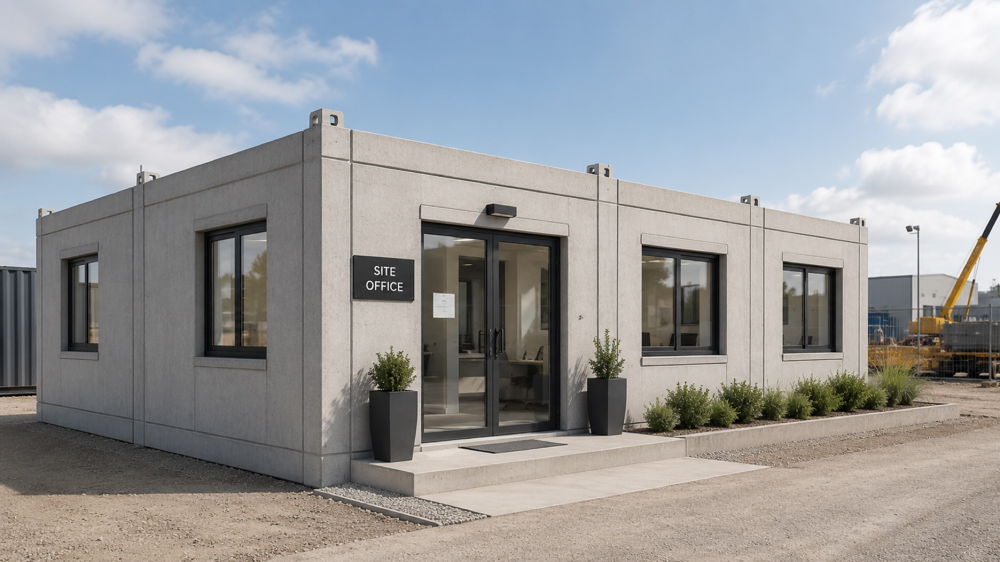

Insights · People
From learner to plant manager.
A precast plant runs on people who know the system. Casting, finishing, QA, services — every station requires trained hands, and the training has to compound from one cohort to the next. The pipeline is not a programme we run alongside production. It is, in any plant that lasts, how production gets staffed in the first place.

The South African training infrastructure.
South Africa already has the framework. The Construction Education and Training Authority (CETA) registers learnerships at NQF Levels 2–4. The Quality Council for Trades and Occupations (QCTO) certifies trade qualifications — including those in concrete manufacturing, plumbing, electrical, and mechanical services. Adult Basic Education and Training (ABET) covers literacy and numeracy gaps for entrants who need them.
Industrialised construction needs all three. We take the existing framework and build a career ladder on top of it.

How the ladder actually runs.
Entry is through learnership — typically a 12-month cohort under CETA at NQF Level 2 or 3, with a stipend, a workplace supervisor, and an explicit completion target. Where literacy or numeracy needs underpin, ABET runs alongside or ahead of the technical content.
Completion routes into permanent placement on the casting floor or in services pre-assembly. From there, the published pathway runs through QCTO trade qualifications (concrete manufacturing, plumbing, electrical) and into shift-supervisor, line-lead, and operations roles. Plant management positions are advertised internally first — the ladder is not implied. It is on the noticeboard.
The pipeline, published.
01 · ABET
Where it begins.
Where literacy and numeracy gaps exist, ABET is the first step. Closing those gaps is part of the programme cost — not an afterthought.
02 · CETA learnership
NQF 2–4 cohort.
Twelve-to-eighteen-month learnership. Stipend paid throughout. Drop-out is treated as a programme failure to investigate, not a learner failure to write off.
03 · QCTO trade
Recognised qualifications.
Concrete manufacturing, plumbing, electrical, MEP — all leading to QCTO trade certificates. Portable: the learner owns the certification.
04 · Permanent placement
The contract, not the certificate.
Completed learners receive priority placement into permanent factory roles — the same posts they trained alongside.
05 · Internal-first promotion
The ladder is on the noticeboard.
Shift-supervisor, line-lead, plant management — every role above entry is advertised internally before externally.
The pipeline is the company.
Skills are not a cost line. They are the company's capacity to produce. Every cohort that completes a learnership becomes the trainers for the next cohort. The plant manager in five years is, with high probability, a person who started on the casting floor.
That is how a precast company actually scales. Not by importing skilled labour at each new plant, but by building the pipeline that produces it.